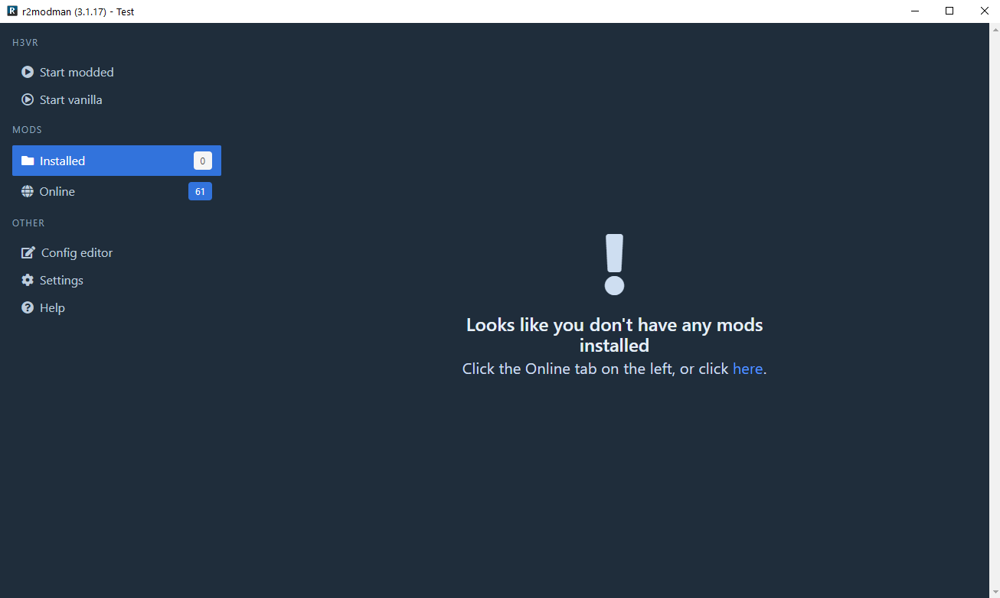
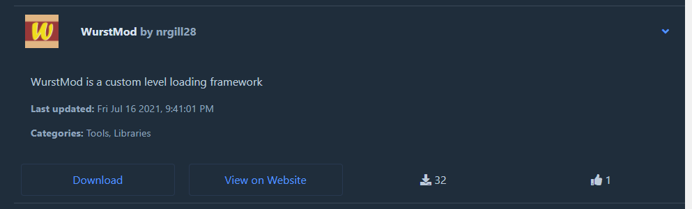

Thunderstore
Thunderstore is the site to find mods.
r2modman and Thunderstore Mod
Manager are mod managers meant to be used to
manage mods from Thunderstore. This site will refer to r2modman, but Thunderstore Mod Manager can be used with the same
instructions.
If you would prefer a video tutorial, you can find one here by Jeditobiwan:

Installing Mods via r2modman
Warning
If you have installed mods previously from another storefront, please preform a clean install.
Important
Mods are no longer installed to the root H3VR directory! Please read the tutorial carefully.
Once you have installed r2modman and opened it, you will be greeted by a page asking you which game you would like to manage. In our case, we want to manage H3VR so click on that. It will ask you to create a profile or select the default one. It's up to you which you use, the default one cannot be deleted, but comes as an empty profile for new users.
You will then be greeted to the main interface shown below. Every time you want to run the game with mods, you will need
to press the Run Modded button in the top left corner. This will launch the game with the mods listed under
the Installed section on the left.

r2modman contains a list of Thunderstore mods in their Online section. It will automatically download any mods
required by any other mods. This means all you need to worry about is the mods you want, and not what's needed to run
it. This process also works in reverse: if you were to uninstall a mod that other mods depend on, those mods will also
be uninstalled.
From the Online section in r2modman, install anything you want by clicking on it, then by clicking on the Download
button. Below is a picture of the WurstMod dependency as an example.

Installing mods not on Thunderstore
Please see the Importing External Mods doc for more information.
Troubleshooting
Many common problems can be found on the r2modman wiki
page, Why aren't my mods working?, provided
by Ebkr.
For less common problems, see the Troubleshooting articles for more details. New problems
are found every day, but yours will likely be on this page.
Configuring Mods
Some mods may utilize configuration files to change certain aspects of their behavior. Using r2modman's Config Editor
setting on the left, you can change any config file created.
To generate config files, fully load the game. This will generated config files for all the mods currently enabled.
Errors may prevent options within the config files or even entire config files to not generate. If you do have errors,
fix those before changing config options.
Below is a picture of where the Config Editor feature is.

Running your game with mods
To run mods, you must press the Run Modded button within r2modman.
If you would like to run the game modded through Steam, making the ease of use and usefulness of profiles irrelevant,
please see the bottom of the General section of the Help menu on the left.